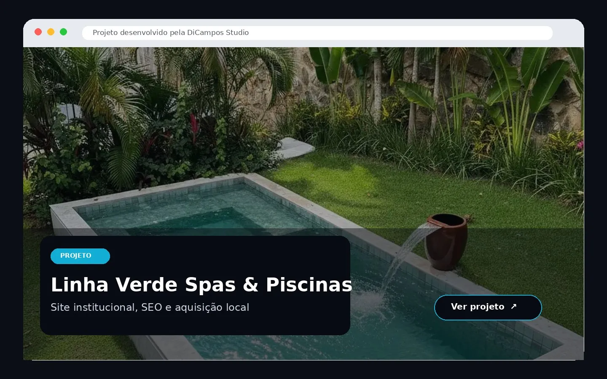
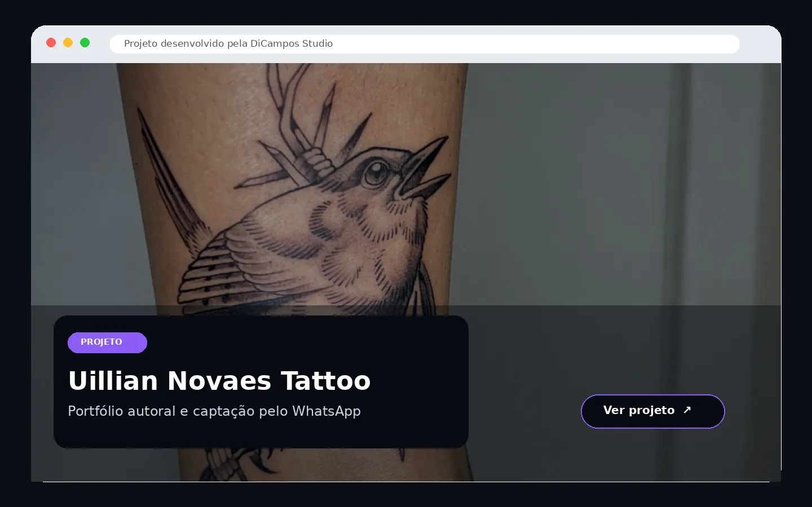
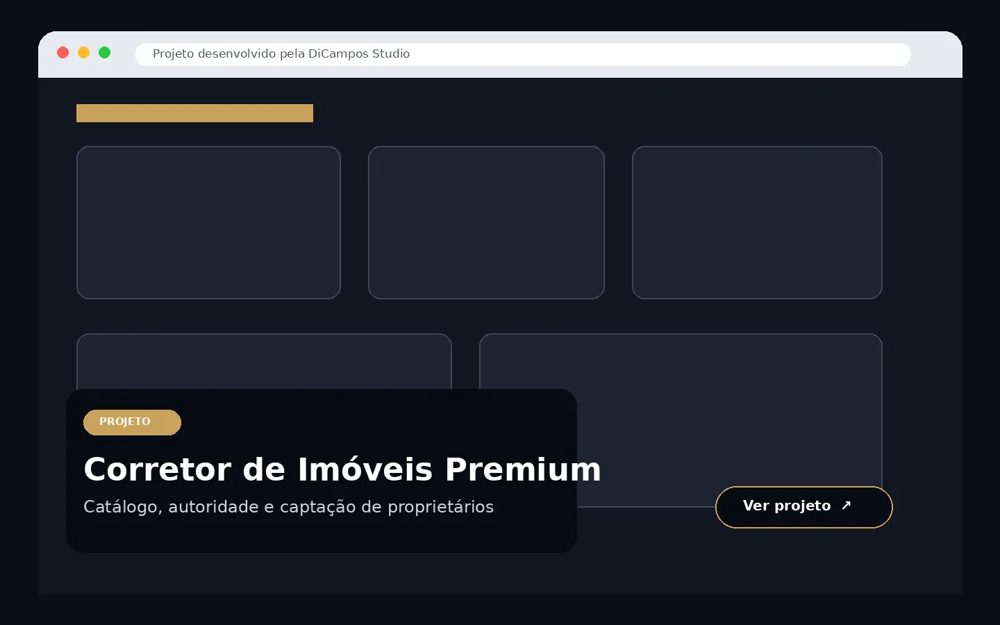
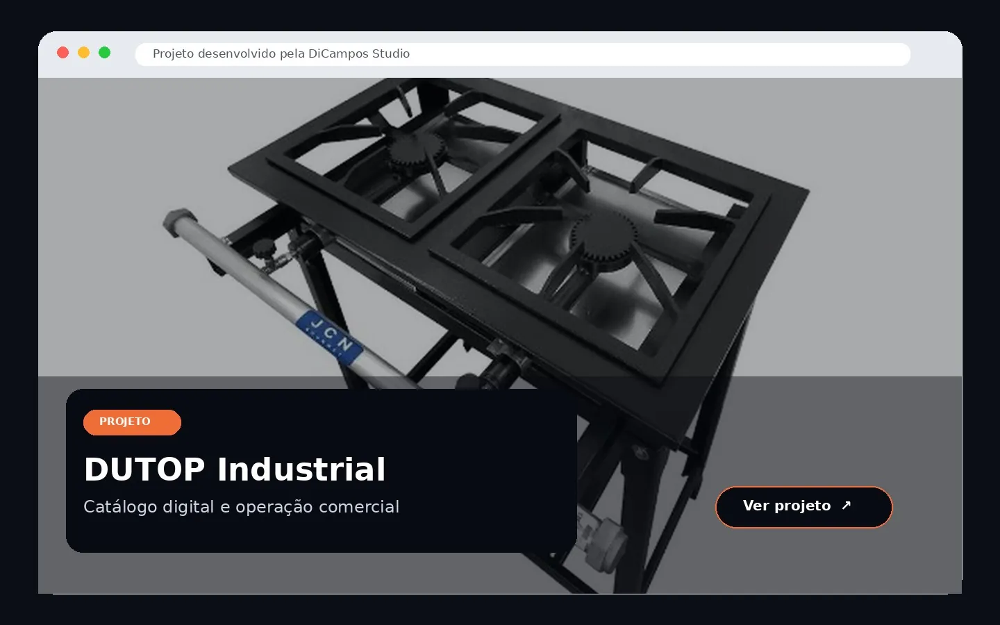

Fundação
Posicionamento, proposta de valor, arquitetura do site e definição dos objetivos de conversão.
Estratégia • UX • ConteúdoPlanejamos e conectamos site, SEO, Google Ads, Meta Ads e mensuração para que sua empresa pare de depender de ações isoladas e passe a operar com uma estratégia digital clara.
Quando site, anúncios, conteúdo e métricas não conversam entre si, a empresa perde clareza, desperdiça investimento e deixa oportunidades pelo caminho. A implantação digital organiza essas peças em torno de objetivos reais de negócio.
Não entregamos apenas páginas ou campanhas. Construímos a base necessária para sua empresa ser encontrada, transmitir confiança, captar oportunidades e aprender com os próprios dados.
Posicionamento, proposta de valor, arquitetura do site e definição dos objetivos de conversão.
Estratégia • UX • ConteúdoSite ou landing pages profissionais, rápidas, responsivas e preparadas para evoluir.
Website • Landing PagesSEO e mídia paga conectados à intenção do público e ao momento comercial da empresa.
SEO • Google Ads • Meta AdsEventos, conversões e indicadores para saber o que gera resultado e onde melhorar.
GA4 • GTM • Search ConsoleUma estrutura digital coerente, mensurável e preparada para gerar demanda com mais previsibilidade.
Descobrir o que sua empresa precisa ↗Antes de investir mais, é preciso descobrir onde a jornada está quebrada: na visibilidade, na confiança, na conversão ou na mensuração.
O visitante não entende rapidamente o diferencial, a solução ou o próximo passo.
Os concorrentes ocupam o espaço quando o cliente demonstra intenção de contratar.
Sem rastreamento adequado, fica difícil separar movimento de resultado.
Site, redes sociais, tráfego e atendimento não seguem uma estratégia única.
Selecionamos e conectamos os serviços necessários para resolver os gargalos prioritários do negócio.
Sites institucionais com estratégia, clareza, velocidade, SEO e foco em conversão.
Conhecer solução ↗ 02Arquitetura, conteúdo e otimização para aumentar presença nas buscas relevantes.
Conhecer solução ↗ 03Campanhas para alcançar pessoas que já demonstram intenção de contratar.
Conhecer solução ↗ 04Estratégias de descoberta, consideração e remarketing para ampliar demanda.
Conhecer solução ↗ 05Páginas orientadas a uma oferta e a uma ação, sem distrações desnecessárias.
Conhecer solução ↗GA4, GTM, eventos e conversões para transformar comportamento em decisões.
Base para otimização contínuaUm processo transparente para evitar soluções soltas e priorizar o que realmente precisa ser feito.
Analisamos negócio, público, concorrência, canais e estrutura atual.
Definimos prioridades, arquitetura, mensagens, canais e indicadores.
Construímos e conectamos os ativos digitais necessários.
Configuramos eventos e acompanhamos a jornada até a conversão.
Usamos dados para melhorar conteúdo, campanhas e experiência.
A DiCampos organiza cada solução em uma arquitetura clara. Assim, o visitante encontra uma resposta mais próxima do que procura e o Google entende melhor a especialidade de cada página.
Páginas com conteúdo próprio, contexto regional e conexão direta com os serviços centrais.
Arquiteturas adaptadas à jornada, ao conteúdo e às necessidades comerciais de diferentes mercados.
Projetos publicados e demonstrações estratégicas apresentados com imagens reais, contexto e acesso direto às experiências desenvolvidas.
Experiências reais disponíveis para navegação.

Visualizar projetoPresença digital integrada para apresentar piscinas e spas, apoiar campanhas e transformar interesse em contato comercial.

Visualizar projetoPortfólio digital criado para valorizar o estilo do artista, fortalecer confiança e facilitar pedidos de orçamento.
Modelos desenvolvidos para demonstrar soluções por segmento.

Visualizar projetoModelo premium para apresentar imóveis, captar compradores e abrir um canal específico para proprietários.

Visualizar projetoCatálogo digital para fogões industriais, atendimento comercial e preparação para integrações com marketplaces.
A DiCampos Studio integra tecnologia, tráfego, SEO e análise para organizar a presença digital de empresas que precisam crescer com mais clareza. Cada entrega parte de um diagnóstico e é construída para funcionar dentro de um sistema, não como uma peça isolada.
Estratégia antes da execução. Mensuração antes da suposição.
Gestor de tráfego e estrategista digital com experiência em sites, SEO, campanhas e mensuração.
Responda um formulário rápido para contextualizar seu cenário e iniciar uma conversa mais estratégica.
O formulário organiza as informações e prepara a conversa pelo WhatsApp.
Iniciar diagnóstico ↗Ou baixe o checklist gratuitoVamos entender seu cenário e identificar quais elementos precisam ser criados, corrigidos ou conectados para que o digital trabalhe a favor da empresa.
Solicitar diagnóstico ↗